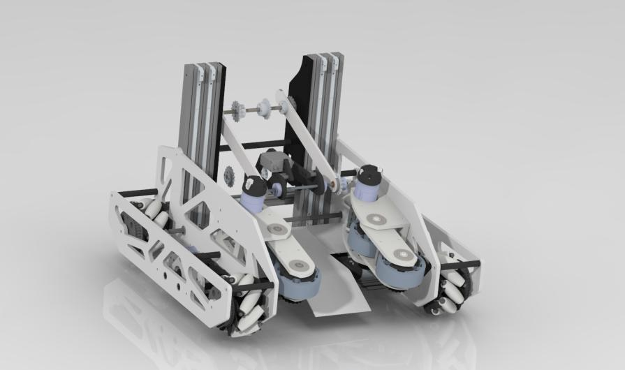

If you are unfamiliar with FTC robotics, or just getting started, I recommend that you find videos of robots that have been successful in previous seasons. You will probably start to notice a pattern. Many successful robots have similar elements that make them efficient and effective scoring machines. After some thought, I decided that FTC robots can be broken down into 4 main subsystems: Drivetrains, Intakes, Linear Motion Mechanisms, and Scoring Mechanisms The main content of this website will be devoted to giving examples and educating readers about each of these subsytems.
To give a brief introduction to these four subsystems, we can examine the 731 Skystone robot that I designed: Yang
